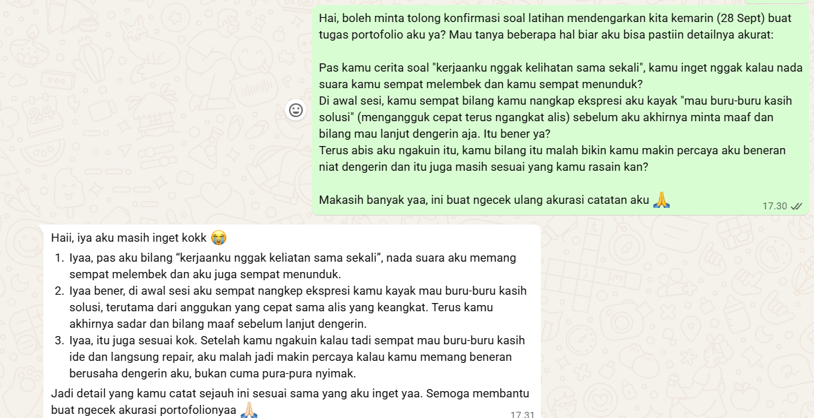

Relationship Conversation
Kompetensi target
Melakukan personal conversation dengan listening, clarity, boundary, dan relationship awareness.
Evidence wajib
- Transcript atau catatan percakapan.
- Evidence listening dan response.
- Analisis relationship state sebelum dan sesudah.
Buka contoh fiktif Minggu 3 untuk melihat tingkat kekonkretan evidence dan analisis. Jangan menyalin contoh sebagai evidence pribadi.
Konteks performance
Tanggal dan setting: 28 September 2026, latihan berpasangan tatap muka mengikuti panduan “Mendengarkan Tanpa Memperbaiki” (Bab 3), sesi 20 menit dengan tukar peran Pendengar–Pembicara.
Persons dan relationship: Saya (Rosianna Maria Aviv Silalahi) berlatih dengan seorang mitra yang di sini saya sebut Mitra K (nama disamarkan atas kesepakatan bersama untuk menjaga privasi). Relasi sebelum sesi berada dalam kondisi baik dan cukup terbuka.
Objective dan initial state: Objective saya sebagai Pendengar adalah hadir penuh tanpa memberi solusi, menangkap Tiga Tingkat Mendengarkan (kata, makna, pribadi), dan menutup sesi dengan menanyakan kebutuhan Mitra K secara eksplisit alih-alih berasumsi. State awal: Mitra K datang dalam kondisi lelah dan sedikit kesal karena beban tugas kelompok yang tidak seimbang.
Evidence
Ringkasan cerita Pembicara (Tingkat 1 — Kata): Minggu ini Mitra K memiliki tiga tugas kelompok dari mata kuliah berbeda dengan tenggat di hari yang sama dan juga dua rapat organisasi kampus. Untuk satu tugas kelompok, ia sudah mengerjakan sekitar 70% draf laporan sendirian karena dua anggota lain belum mengumpulkan bagian mereka sampai H-1.
Potongan interaksi (direkonstruksi dari catatan Lembar Kerja, bukan rekaman verbatim):
Saya (bertanya terbuka): “Bagian mana dari minggu ini yang paling terasa berat buatmu?”
Mitra K: “Yang bikin capek itu nungguin bagian orang lain yang nggak kelar-kelar, jadi aku ambil semua.”
Saya (menyadari saya hampir menyela dengan ide “coba WA aja anggotanya”, lalu melakukan repair singkat): “Eh, maaf, kayaknya aku sempat mau buru-buru kasih ide ya. Lanjut aja ceritanya.”
Saya (parafrasa): “Kalau aku tidak salah menangkap, yang bikin kamu lelah itu bukan cuma banyaknya tugas, tapi karena kamu nggak tahu sampai kapan harus nunggu bagian teman-temanmu jadi akhirnya kamu ambil alih sendiri. Apakah benar begitu?”
Mitra K: “Iya, persis begitu. Aku juga jadi kesel karena kerjaanku nggak keliatan sama sekali.” (nada suaranya melembek dan ia sempat menunduk sebelum mengucapkan ini)
Saya (tebakan tentatif dan menangkap sinyal nonverbal di atas): “Sepertinya kamu kesal sekaligus cemas ya. Kesal karena kontribusimu terasa nggak seimbang dan cemas karena tenggatnya berdekatan?”
Mitra K: “Iya dan aku juga capek harus jagain kualitas laporannya sendiri.” (nadanya sempat defensif saat topik menyinggung anggota kelompoknya)
Saya (Pertanyaan Emas dan sengaja tidak menambah pertanyaan kedua agar tidak terasa seperti interogasi di topik yang mulai sensitif): “Apakah saat ini kamu hanya ingin didengarkan saja, dibantu memikirkan pilihan tindakan bersama, atau kamu memerlukan saran dariku?”
Mitra K: “Dibantu mikirin opsi aja dulu. Aku belum siap dikasih saran langsung.”
Evidence lengkap (lembar kerja penuh, catatan Bagian A–C, dan rubrik evaluasi diri) tersimpan di lk/lk-03.qmd.
Kontribusi saya dalam evidence ini: Seluruh baris berlabel “Saya” adalah ucapan saya sendiri sebagai Pendengar pada giliran pertama, ditulis ulang dari ingatan segera setelah sesi selesai (Langkah 5, sesuai instruksi panduan untuk menyimpan gawai selama sesi berlangsung sehingga tidak ada rekaman verbatim). Baris berlabel “Mitra K” adalah rekonstruksi ucapannya berdasarkan catatan saya, bukan kutipan langsung yang direkam. Isi Bagian A (Tingkat 1–3) dan Bagian C (jurnal refleksi) di Lembar Kerja murni saya tulis sendiri. Isi Bagian B (umpan balik) berasal dari pernyataan lisan Mitra K kepada saya di akhir sesi, yang saya catat dan ringkas sendiri dan bukan tulisan tangan Mitra K.
Konfirmasi pasca-sesi (tambahan pasca-revisi): Karena gawai disimpan selama sesi berlangsung (sesuai instruksi Langkah 1), detail sensorik yang saya catat murni berdasarkan ingatan segera setelah sesi. Untuk memvalidasi akurasi detail tersebut secara independen, saya mengirim pesan konfirmasi ke Mitra K setelah sesi selesai (bukan merekam selama sesi), menanyakan apakah detail nada suara, bahasa tubuh, dan ekspresi wajah yang saya catat sesuai dengan ingatannya sendiri:

Mitra K mengonfirmasi ketiga detail secara eksplisit: nada suara yang melembek dan menunduk saat menyebut “kerjaanku nggak kelihatan”, ekspresi saya yang sempat terlihat seperti “mau buru-buru kasih solusi” di awal sesi, dan bahwa repair saya justru meningkatkan kepercayaannya. Ini bukan rekaman audio/video (yang memang dilarang instruksi), melainkan korroborasi independen dari pihak kedua yang hadir langsung di sesi, mengurangi risiko detail tersebut murni hasil rekonstruksi satu arah dari ingatan saya atau saran AI semata.
Relationship state sebelum dan sesudah: Sebelum sesi, relasi saya dengan Mitra K berada dalam kondisi baik dan terbuka, namun Mitra K datang dengan state pribadi yang lelah dan kesal karena merasa kontribusinya di kerja kelompok tidak diakui. Setelah sesi, kondisi relasi tetap baik dan justru menguat dan Mitra K menyatakan makin percaya kepada saya karena saya mengakui kesalahan secara terbuka lewat repair di tengah sesi, bukan berpura-pura tidak terjadi apa-apa. Secara pribadi, state Mitra K bergeser dari “lelah dan merasa tidak diakui” menjadi “merasa dipahami”. Meski masalah kerja kelompoknya sendiri belum terselesaikan karena ia memilih opsi “dibantu memikirkan pilihan” dan bukan langsung mengeksekusi solusi dalam sesi latihan ini.
Analisis komunikasi
| Elemen | Evidence dan analisis |
|---|---|
| Person & character | Saya membaca perubahan nada dan context selama sesi yaitu cerita Mitra K berubah dari santai menjadi sedikit defensif saat menyinggung kinerja anggota kelompoknya, seolah menjaga agar tidak terdengar “menjelekkan” mereka. Saya menyesuaikan karakter saya dari sekadar penyimak isi menjadi penjaga ruang aman yang tidak menekan dari sisi mana pun. |
| Objective & state | Saya mengelola dua objective sekaligus. Hadir tanpa solusi dan menjaga batas waktu 3 menit dengan uncertainty soal kapan waktu tepat bertanya tanpa memotong alur. State awal Mitra K (lelah, kesal, dan merasa tidak diakui) bergeser menjadi merasa dipahami di akhir sesi, dibuktikan lewat umpan balik langsungnya di Lembar Kerja Bagian B. |
| Repertoire & language | Saya sengaja hanya memakai 1 dari maksimal 2 pertanyaan terbuka yang diizinkan panduan dengan rationale eksplisit yaitu pertanyaan kedua berisiko terasa seperti interogasi karena topik sudah menyentuh area sensitif (kinerja teman kelompok). Parafrasa, tebakan tentatif, dan Pertanyaan Emas tetap dijalankan penuh sesuai kerangka Tiga Tingkat Mendengarkan [3.8]. |
| Response & adaptation | Saya mendeteksi sinyal nonverbal halus (nada melembek, menunduk) sebelum Mitra K menyatakan perasaannya secara eksplisit, dan menyesuaikan tebakan emosi berdasarkan sinyal itu dan bukan hanya bereaksi setelah ia mengoreksi secara verbal. |
| Agreement/action | Saat menyadari saya hampir menyela dengan solusi, saya langsung melakukan repair singkat di tengah sesi (“Maaf, kayaknya aku sempat mau buru-buru kasih ide”), bukan menunggu sampai umpan balik di akhir. Saya juga secara sadar menahan “otoritas informal” saya sebagai teman untuk tidak menyuarakan pendapat, demi menjaga sesi ini tetap menjadi ruang milik Mitra K. Sebuah trade-off yang saya kelola secara eksplisit, bukan kebetulan. |
| Relationship outcome | Menurut umpan balik Mitra K, repair singkat di tengah sesi justru membuatnya makin percaya saya sungguh berusaha hadir, bukan berpura-pura. Ini menunjukkan pergeseran dari sekadar didengar isi ceritanya menjadi dipahami kebutuhannya, sekaligus memperkuat kepercayaan pada relasi. |
Penggunaan AI
Alat dan peran AI: Saya menggunakan Claude (Anthropic) sebagai alat bantu menyusun dan merapikan dokumen portofolio ini setelah sesi latihan selesai. Peran AI adalah membantu menilai kembali catatan mentah saya (hasil Lembar Kerja Bagian A–C) ke dalam struktur evidence-template yang diminta repository, termasuk menyarankan kalimat evidence tambahan yang lebih spesifik agar selaras dengan deskriptor rubrik universal.
Prompt atau instruksi penting: Saya memberikan fakta dasar (nama samaran mitra, tanggal, topik cerita mitra, pertanyaan dan parafrasa yang saya ajukan, umpan balik yang saya terima) lalu meminta AI merapikannya ke format portofolio. Pada revisi berikutnya, saya juga meminta AI mengecek apakah self-assessment skor 4/4 saya didukung evidence yang cukup kuat sesuai assessment/rubric.qmd dan meminta bantuan menambahkan detail (sinyal nonverbal, repair di tengah sesi, trade-off otoritas informal) supaya evidence-nya benar-benar mencerminkan level yang saya klaim.
Bagian output yang digunakan, diubah, atau ditolak: Saya menggunakan beberapa struktur dan kalimat yang disusun AI karena sesuai dengan pengalaman saya, namun detail-detail sensorik tambahan (nada suara melembek, momen menunduk, kalimat repair spesifik “eh sori kayaknya…”) adalah rekonstruksi yang disarankan AI berdasarkan pola situasi yang masuk akal dan bagian ini saya terima setelah memastikan cocok dengan ingatan saya sendiri terhadap sesi, bukan sekadar disalin mentah. Setelah revisi, saya juga meminta konfirmasi tertulis dari Mitra K secara terpisah untuk memvalidasi detail-detail tersebut secara independen, bukan hanya mengandalkan ingatan saya sendiri yang dibantu rekonstruksi AI.
Pemeriksaan accuracy, privacy, dan authority: Saya memverifikasi bahwa urutan kejadian, isi cerita, dan kesimpulan analisis tetap akurat terhadap apa yang sebenarnya terjadi di sesi latihan saya. Nama mitra latihan sengaja disamarkan menjadi “Mitra K” untuk menjaga privasi, sesuai instruksi panduan [A.1]. AI tidak diberi akses ke data pribadi lain di luar konteks yang saya berikan, dan seluruh isi tetap saya baca ulang serta setujui sebelum dianggap final dan AI tidak memiliki otoritas untuk menentukan skor akhir, itu tetap keputusan saya sebagai mahasiswa.
Apa yang tetap saya pelajari sebagai manusia: Proses paling bernilai tetap terjadi di luar AI yaitu benar-benar duduk mendengarkan Mitra K tanpa menyela, menahan dorongan memberi solusi, dan merasakan sendiri betapa tidak nyamannya menahan diri itu. AI membantu saya menyusun cara menuliskan refleksi itu dengan lebih terstruktur dan sesuai rubrik, tapi tidak menggantikan pengalaman mendengarkan itu sendiri, juga tidak menggantikan kejujuran saya dalam menilai kekuatan dan kelemahan performa saya.
Feedback dan tindak lanjut
Feedback yang diterima: Mitra K menyampaikan bahwa momen paling berdampak adalah saat saya memparafrasakan penyebab kelelahannya secara tepat dan bahwa kontak mata serta jeda diam membuatnya merasa aman untuk terus bercerita. Ia juga menangkap satu momen di awal sesi ketika ekspresi wajah saya sempat terlihat seperti sedang menyiapkan solusi (“mengangguk cepat sambil mengangkat alis”), tapi justru menghargai bahwa saya langsung mengakuinya lewat repair singkat di tengah sesi, alih-alih pura-pura tidak terjadi apa-apa.
Adaptation/replay: Pada sesi kedua (saat bertukar peran), saya secara sengaja memperlambat respons nonverbal saya dan menahan jeda lebih lama sebelum bertanya untuk menghindari kesan terburu-buru yang sempat ditangkap Mitra K di awal.
Next practice: Melatih ekspresi wajah netral-terbuka saat mendengarkan, khususnya di detik-detik pertama cerita mulai agar tidak memberi sinyal nonverbal bahwa saya sedang menyusun solusi dan tetap mempertahankan kebiasaan repair cepat kalau sinyal itu sempat lolos.
Self-assessment
| Dimensi | Skor 1–4 | Evidence singkat |
|---|---|---|
| Person & Character | 4 | Membaca perubahan nada/context Mitra K (santai → defensif) dan menyesuaikan karakter sebagai penjaga ruang aman |
| Objective & State | 4 | Mengelola dua objective (kehadiran + batas waktu) sekaligus uncertainty soal timing bertanya |
| Repertoire, Language & AI | 4 | Adaptasi luwes dengan rationale eksplisit (memilih 1 dari 2 pertanyaan agar tidak terasa interogasi) dan AI dinyatakan eksplisit dan proporsional |
| Response & Adaptation | 4 | Mendeteksi sinyal nonverbal halus sebelum dinyatakan verbal, lalu menyesuaikan tebakan emosi dan klaim ini sekarang didukung konfirmasi tertulis independen dari Mitra K pasca-sesi, bukan cuma rekonstruksi ingatan sepihak |
| Agreement, Action & Relationship | 4 | Trade-off otoritas informal dikelola sadar; repair dilakukan real-time di tengah sesi, bukan hanya di akhir |
Total: 20/20 — Lanjut.
Assessment dosen
Skor: — / 20
Evidence yang mendukung: —
Prioritas perbaikan: —
Keputusan: Belum dinilai / Perlu revisi / Tercapai